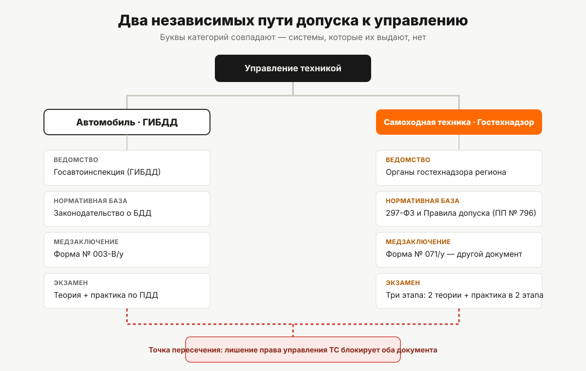

Чем права тракториста отличаются от водительских
Гостехнадзор вместо ГИБДД, свои категории, своя медсправка и свой экзамен. Разбираем шесть отличий удостоверения тракториста-машиниста от водительского удостоверения по действующим правилам.
У вас уже есть водительское удостоверение категории B, и тут выясняется, что на трактор, квадроцикл или фронтальный погрузчик оно не действует. Знакомая растерянность: машина как будто похожа на автомобиль, а документ нужен какой-то другой.
Похожа — только внешне. На трактор, самоходный комбайн, снегоход или внедорожный вездеход распространяется не законодательство о дорожном движении, а отдельная система допуска, которая живёт по своим правилам почти сорок лет. Разбираем шесть мест, где эта система расходится с привычными водительскими правами.

Отличие 1. Разные ведомства
Водительское удостоверение выдаёт и контролирует Госавтоинспекция. Удостоверение тракториста-машиниста — другая история: его выдают органы гостехнадзора, то есть исполнительные органы субъектов Российской Федерации, уполномоченные на региональный государственный контроль в области технического состояния и эксплуатации самоходных машин и других видов техники.
Разница не формальная. Это не «филиал ГИБДД по тракторам», а отдельная региональная структура: свой приём экзаменов, свой учёт, свои бланки. Обратиться в ГИБДД по вопросу прав на трактор — значит обратиться не по адресу.
Отличие 2. Разная нормативная база
У автомобильных прав в основе — законодательство о безопасности дорожного движения. У прав тракториста — свой федеральный закон от 02.07.2021 № 297-ФЗ «О самоходных машинах и других видах техники» и Правила допуска к управлению самоходными машинами и выдачи удостоверений тракториста-машиниста (тракториста), утверждённые постановлением Правительства РФ от 12.07.1999 № 796 (действует до 1 сентября 2028 года).
Это значит буквально следующее: любой вопрос про трактор, квадроцикл или погрузчик — «сколько действует», «что нужно для допуска», «как пересдать» — нужно смотреть в этих двух документах, а не в ПДД и не в законодательстве о безопасности дорожного движения. В остальных статьях серии мы опираемся именно на них.
Отличие 3. Категории называются одинаково, а значат разное
У водительских прав есть категории B, C, D, E — и у прав тракториста тоже есть категории с такими буквами. Совпадение чисто алфавитное: система обозначений одна, смысл, вложенный в буквы, — разный.
В Правилах допуска буквы B, C, D, E, а также A с подкатегориями I–IV и отдельная категория F закреплены за самоходными машинами и определяются через тип хода и мощность двигателя:
| Категория | Что означает по Правилам допуска |
|---|---|
| A I–A IV | внедорожные мото- и автотранспортные средства — по массе, числу мест и назначению |
| B | гусеничные и колёсные машины с двигателем мощностью до 25,7 кВт |
| C | колёсные машины с двигателем мощностью от 25,7 до 110,3 кВт |
| D | колёсные машины с двигателем мощностью свыше 110,3 кВт |
| E | гусеничные машины с двигателем мощностью свыше 25,7 кВт |
| F | самоходные сельскохозяйственные машины |
Автомобильные категории построены на другом принципе — на типе и назначении транспортного средства, а не на мощности двигателя и типе хода. Расшифровку автомобильных категорий здесь сознательно не приводим: это предмет законодательства о дорожном движении, а не Правил допуска, и в границы этой статьи не входит. Единственное, что важно зафиксировать: если в удостоверении тракториста открыта категория C, это не «то же самое C», что в водительском удостоверении, и одно не подтверждает другое. Подробный разбор всех девяти категорий — в статье «Категории удостоверения тракториста-машиниста».
Отличие 4. Другое медицинское заключение
Справка, с которой вы проходите водительскую медкомиссию, для тракториста не подходит. Правила допуска отдельным подпунктом требуют медицинское заключение о наличии (об отсутствии) у трактористов, машинистов и водителей самоходных машин медицинских противопоказаний, показаний или ограничений — это форма № 071/у, утверждённая приказом Минздрава России от 09.06.2022 № 395н. Форма для водителей транспортных средств (003-В/у, приказ Минздрава от 24.11.2021 № 1092н) — другой документ, с другой структурой граф. Один не заменяет другой. Что именно проверяют в рамках медицинского заключения формы 071/у и как его получить — в статье «Медсправка 071/у для тракториста».
Отличие 5. Три экзамена вместо двух
В экзамене на право управления самоходными машинами больше этапов, чем в автомобильном. Правила допуска устанавливают строгую последовательность:
- теория по безопасной эксплуатации самоходных машин (для категории F и тех, кто получает квалификацию «тракторист-машинист», — отдельный блок по эксплуатации самоходных, сельскохозяйственных машин и оборудования);
- теория по правилам дорожного движения;
- комплексный практический экзамен — по навыкам вождения, безопасной эксплуатации машин и правилам дорожного движения одновременно, в два этапа: на закрытой площадке и на маршруте в реальных условиях.
Кандидат, не сдавший теорию, к практике не допускается. Проходной балл на обоих видах экзаменов — не менее 75 % правильных ответов или манёвров. У обладателей российского национального водительского удостоверения при этом есть послабление: их освобождают от проверки знания собственно правил дорожного движения, поскольку эти знания уже подтверждены. Весь путь от заявления до получения удостоверения, включая место экзамена в этой цепочке, — в статье «Как получить права тракториста».
Отличие 6. Квалификация, которой нет у водителей
В удостоверении тракториста-машиниста есть графа «Особые отметки», в которую вносят не только ограничения, но и разрешительные записи о квалификации — например, «тракторист-машинист». Такая запись — не то же самое, что открытая категория. Она добавляется на основании отдельного документа о квалификации (свидетельства о профессии рабочего) и расширяет круг работ, которые человек вправе выполнять, — вплоть до работ, не связанных непосредственно с управлением машиной. У водительского удостоверения аналога этой графы нет.
Что общего у двух систем
Полностью независимыми эти два документа не назвать. Если суд лишил человека права управления транспортными средствами — в том числе по статье 9.3 Кодекса об административных правонарушениях (она как раз про нарушение правил эксплуатации тракторов и самоходных машин) или по статьям главы 12 КоАП о нарушениях в области дорожного движения, — до истечения срока лишения ему не вернут и удостоверение тракториста-машиниста. Возврат обоих документов после лишения регулируется отдельно и подробно разбирается в статье «Ответственность за управление без прав тракториста».
Если вы уже водитель: что это меняет
| Вопрос | Ответ |
|---|---|
| Действует ли автомобильное ВУ на трактор | Нет, это независимый документ |
| Нужна ли отдельная медсправка | Да, форма 071/у, а не справка для водителей |
| Освобождает ли автомобильное ВУ от части теории | Да, от блока по ПДД (п. 29¹ Правил допуска) |
| Даёт ли автомобильное ВУ скидку на возраст или стаж | Для категорий A II, A III, A IV — да, это прямое условие допуска |
| Действует ли лишение прав на оба документа | Да, при лишении права управления транспортными средствами |
Наличие автомобильных прав не заменяет и не ускоряет напрямую получение прав тракториста — за исключением освобождения от блока ПДД на теории и отдельного требования для внедорожных автомобильных категорий A II–A IV. Дальше нужен свой путь: медзаключение по форме 071/у, профессиональное обучение и три экзамена по Правилам допуска. С тем, какие категории заявлены в тракторном направлении «Авто-Класса», можно ознакомиться на странице направления.